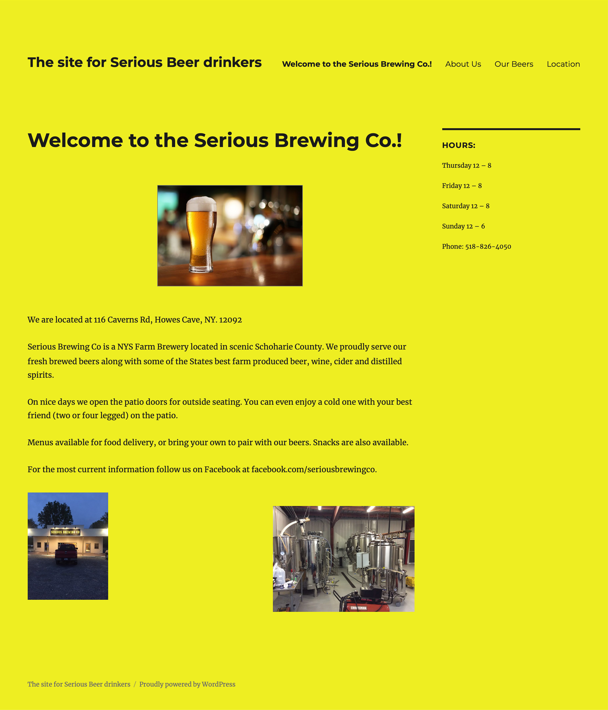
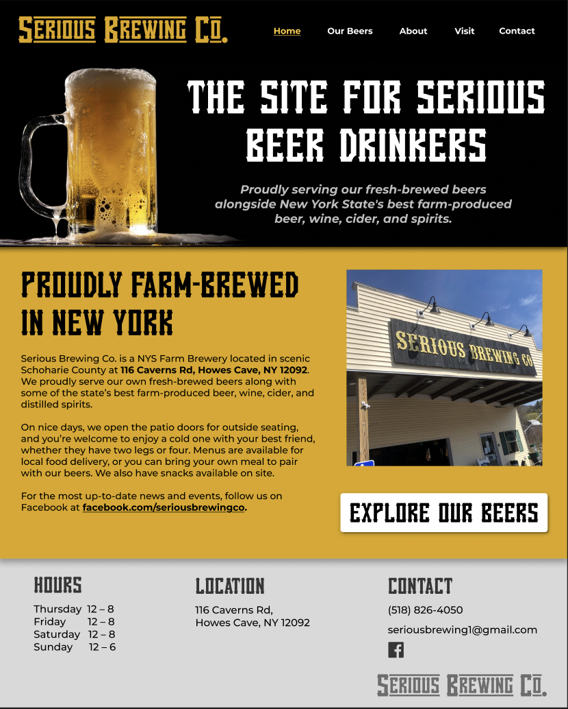
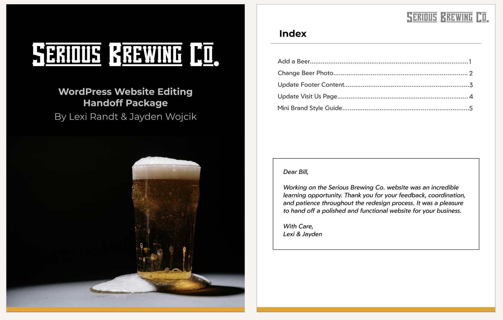

Through the Siena Beverage Institute, students get the opportunity to work with real clients in the beverage
industry. For this project, our client was Bill, the owner of Serious Brewing Co., who was looking for a
complete website redesign.
We started working with him in Fall 2025 by discussing his goals and reviewing the existing website. Some of
the main issues we noticed were confusing navigation, an overwhelming color scheme, and important information
that was difficult to find. Our goal was to create a cleaner, more organized, and easier-to-use experience.

The old serious brewing website home page. That yellow color seriously needed to go.
For this project, I didn't start with low-fidelity sketches or wireframes. Instead, I brainstormed different
ideas and experimented with layouts until I found a beer photo on Pexels that really stood out to me. Because
Pexels offers high-quality photos that are free for commercial use, I knew it could be a strong choice for the
client while also elevating the visual direction of the site.
Once I found the image, the rest of the visual direction started to come together. I built the layout and
and color scheme around the photo, which helped give the site a more consistent look. Since the site only
needed five
main pages, the hierarchy and navigation also came together fairly naturally.

The new website homepage design (desktop version).
I developed the design in Figma and presented the ideas to Bill for feedback. His positive response to the
initial direction helped confirm that the visual style was heading in the right direction.
From there, I continued refining the layout, navigation, content organization, imagery, and visual hierarchy
based on our conversations.
Design → Present → Get Feedback → Refine → Repeat
This process taught me how much a real client's feedback can influence a design. It also helped me become more
comfortable making design decisions while still being open to changing them based on someone else's
perspective.
Once the design was finalized, my partner took the lead on implementing it in WordPress. Since our roles were
split between design and development, the transition from Figma to the live site became a very collaborative
part of the project.
As the implementation progressed, we communicated about how different parts of the design would translate to
WordPress and worked through anything that needed clarification or adjustment. My partner also walked me
through how the WordPress site worked, which gave me a better understanding of what happens after a design
leaves Figma.
As part of the final handoff, I created a knowledge-transfer package for Bill with instructions on how to edit and maintain his new website. The goal was to make sure he could confidently manage the site after the project was finished.

Handoff Package (cover and index).
Working on Serious Brewing Co. gave me the opportunity to take on a real-world design project with an actual client, from the initial ideas and feedback through the final website. It was different from a typical classroom project because the design had to work for someone else's goals, not simply my own.
Academic Showcase Poster Spring 2026 - Serious Brewing Co. Website Redesign